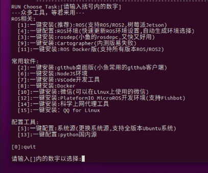
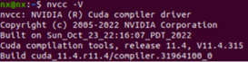
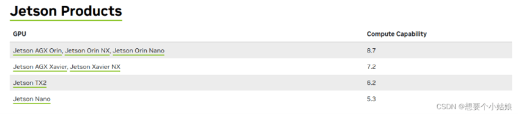
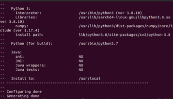
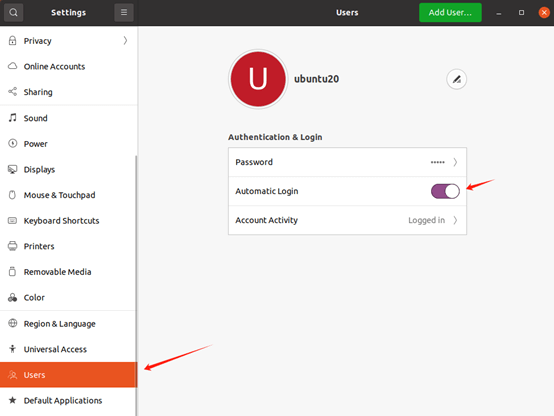
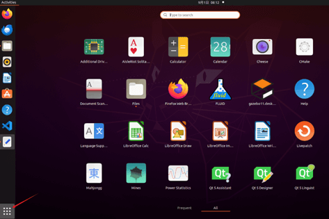
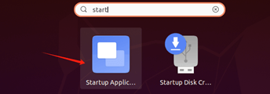

FanciSwarm Pro 搭载4K云台相机——环境搭建指南
文件总览
- yolo文件包 提取码: jfjq
20.04-yolo
├─ 70-ttyusb.rules
├─ auto_ap.sh
├─ datalink_serial.py
├─ mavcrc.py
├─ mavcrc.pyc
├─ mavlink.py
├─ mavlink.pyc
├─ opencv-4.6.0.zip
├─ opencv_contrib-4.6.0.zip
├─ tensorrtx.zip
├─ torch-2.1.0a0+41361538.nv23.06-cp38-cp38-linux_aarch64.whl
├─ vision-release-0.16.zip
├─ yolov5.zip
└─ yolov5_det_trt.py
ROS1安装
说明：① 系统已预装 ROS1，无需重复安装，可直接跳过 ROS1 安装步骤。
② 如何确认系统已安装ROS1：
第一步：打开终端，输入命令：roscore
第二步：查看运行结果，如下图：

我们使用fishros一键环境配置工具进行ROS1-noetic版本的安装
- 在终端输入下面命令
wget http://fishros.com/install -O fishros && . fishros
- 出现下面打印之后

我们首先选择5，系统源的更新

这一步我们选择2

这一步选择1，添加ros源
- 安装ros，我们再次输入下面命令
wget http://fishros.com/install -O fishros && . fishros
- 出现下面打印之后
然后我们输入 1 一键安装 –> 不更换源安装 –> 选择你ubuntu版本对应的ros版本(这里我们选择ROS1的noetic) –> 桌面版进行安装
- 配置rosdep
source ~/.bashrc
sudo apt install python3-rosdep python3-rosinstall python3-rosinstall-generator python3-wstool build-essential
sudo rosdep init
rosdep update
至此rosdep已经安装完毕
安装超级终端
超级终端便于同时运行多个程序，可以进行横向纵向分割
sudo apt-get install terminator -y
安装以及配置CUDA
- 添加源
sudo gedit /etc/apt/sources.list.d/nvidia-l4t-apt-source.list
加下面两行进去
deb http://repo.download.nvidia.com/jetson/common r35.4 main
deb http://repo.download.nvidia.com/jetson/t234 r35.4 main
- 更新源
sudo apt upgrade
sudo apt update
- 装jetson包
sudo apt install nvidia-jetpack
- 配置环境变量
gedit ~/.bashrc
下面添加：
export LD_LIBRARY_PATH=/usr/local/cuda/lib64
export PATH=/usr/local/cuda/bin:$PATH
export CUDA_HOME=/usr/local/cuda
- 更新环境变量
source ~/.bashrc
- 复制文件到cuda目录
cd /usr/include && sudo cp cudnn* /usr/local/cuda/include
cd /usr/lib/aarch64-linux-gnu && sudo cp libcudnn* /usr/local/cuda/lib64
- 查看cuda
nvcc -V (出现下述信息代表安装cuda成功)

- 安装jtop（便于查询系统情况）
sudo apt install python3-pip
sudo -H pip3 install -U pip
sudo -H pip install jetson-stats
重启之后执行如下指令运行
jtop
安装opencv4.6.0 with cuda以支持GPU加速
下载地址：Release OpenCV 4.6.0 · opencv/opencv
扩展模块：Release 4.6.0 · opencv/opencv_contrib
（如果网不好，这两个依赖库也可以用幻思提供的）
解压放在home路径即可
确定 Jetson Orin NX 的算力为 8.7

cd opencv-4.6.0/
mkdir build && cd build （如果用幻思的库，已经存在build文件夹，只需要cd build）
预编译opencv 4.6.0及其扩展模块 opencv_contrib-4.6.0，生成 Makefiles 文件,如果使用幻思的库，要先将build文件夹下的缓存文件全部删除，并且确保opencv和opencv_contrib都解压到home文件夹后再去执行下面指令
cmake -D CMAKE_BUILD_TYPE=RELEASE \
-D CMAKE_INSTALL_PREFIX=/usr/local/ \
-D OPENCV_EXTRA_MODULES_PATH=../../opencv_contrib-4.6.0/modules \
-D WITH_CUDA=ON \
-D CUDA_ARCH_BIN=8.7 \
-D CUDA_ARCH_PTX="" \
-D ENABLE_FAST_MATH=ON \
-D CUDA_FAST_MATH=ON \
-D WITH_CUBLAS=ON \
-D WITH_LIBV4L=ON \
-D WITH_GSTREAMER=ON \
-D WITH_GSTREAMER_0_10=OFF \
-D WITH_QT=ON \
-D WITH_OPENGL=ON \
-D CUDA_NVCC_FLAGS="--expt-relaxed-constexpr" \
-D WITH_TBB=ON \
..
其中CMAKE_INSTALL_PREFIX=/usr/local/ 为安装地址，OPENCV_EXTRA_MODULES_PATH=../../opencv_contrib-4.6.0/modules 为扩展模块所在路径，
CUDA_ARCH_BIN=8.7 为 GPU 算力，
编译完成后如下所示

然后make install 编译安装 opencv 4.6.0 及其扩展模块 opencv_contrib-4.6.0，此安装过程较为漫长，请耐心等待。
sudo make install -j8
安装完成后用
jtop
查看版本

YOLO-V5配置
sudo pip3 install torch-2.1.0a0+41361538.nv23.06-cp38-cp38-linux_aarch64.whl
sudo apt-get install libopenblas-dev
cd vision-release-0.16
export BUILD_VERSION=0.16
python setup.py install --user
cd ..
$ python3
>>> import torch
>>> import torchvision
>>> print(torch.__version__)
>>> print(torchvision.__version__)
以上为检查torch版本信息，如果有证明安装成功。
pip install tqdm
pip install Ipython
pip install seaborn
git clone -b v7.0 https://github.com/ultralytics/yolov5.git
git clone -b yolov5-v7.0 https://github.com/wang-xinyu/tensorrtx.git
如果以上两个工程用git下载，应把幻思提供的压缩包中的.py和.pyc文件复制到/tensorrtx/yolov5/文件夹中，如果直接用幻思压缩包中的工程则无需复制，但是要保证numpy包的版本是1.23.0pip install numpy==1.23.0。
cd yolov5/
wget https://github.com/ultralytics/yolov5/releases/download/v7.0/yolov5s.pt
cp ~/tensorrtx/yolov5/gen_wts.py .
pip install numpy==1.20.3
python gen_wts.py -w yolov5s.pt -o yolov5s.wts
pip install numpy==1.23.0
此时会生成 'yolov5s.wts' 文件.
cd ~/tensorrtx/yolov5/
mkdir build
cd build
cp ~/yolov5/yolov5s.wts .
cmake .. # 如果使用幻思提供的tensorrtx包，最好先清空build文件夹再进行cmake ..
make
./yolov5_det -s yolov5s.wts yolov5s.engine s
pip install pycuda
pip install pyserial
cd ~/tensorrtx/yolov5
sudo chmod 777 /dev/ttyTHS0
将Jetson电源调到MAXN
全部工程自动运行
配置串口可执行权限：
用如下指令把权限配置文件复制到目录/etc/udev/rules.d/中
sudo cp 70-ttyusb.rules /etc/udev/rules.d/
重启电脑后生效
sh auto_ap.sh
开机自启动
- 配置ubuntu系统 auto login

（2）配置自启动文件 auto_ap.sh
注意文件中的工程路径是否与自己的一致，不一致的自己修改一下。
（3）终端输入sh auto_ap.sh
检测slam工程是否在一分钟内正常启动
（4）配置auto_ap.sh开机自动运行

打开Startup Application

点击add

先填个Name，再在Command处添加sh /home/nv/auto_ap.sh。
此时已完成开机自启动配置
（5）推荐把Jetson NX的功率设置为MAXN
重启系统验证一下吧！看看yolo界面有没有在开机1分钟内正常运行。
开启网口1
下载文件r8125-9.015.00.tar.bz2并将其移动到JetsonNX上面，执行下面命令
tar vjxf r8125-9.015.00.tar.bz2
cd r8125-9.015.00.tar.bz2
sudo ./autorun.sh
在系统"Setting"中查看Network项，如果有eth1则开启成功。
替换文件
将我们提供的4K云台相机专属python文件(yolov5_det_trt.py(云台专属))替换到你的~/tensorrtx/yolov5/文件夹下，然后在此文件夹的终端下执行
python3 yolov5_det_trt.py
默认检测人体，有检测效果即为成功。
自定义参数说明
W_img = 1280 # 图像宽度,默认1280x720
H_img = 720 # 图像高度
FOV_x = 81 # 水平视场角，度
FOV_y = 45 # 垂直视场角，度
W_real = 0.8 # target实际宽度，米
H_real = 1.7 # target实际高度，米
safe_distance = 1.5 # 跟踪间距
width_up_threshold = 0.5 # 目标宽度上限阈值，比例
width_down_threshold = 0.25 # 目标宽度下限阈值
k = 1.0 # 系数
Kp_dx = 0.5
Kp_dy = 0.5
Kp_dalt = 0.5
Kp_dyaw = 0.3
- FOV_x与FOV_y是用于单目测距的视场角参数，根据云台内参而定，一般不会更改
- W_real和H_real是指根据识别目标的高宽决定的参数，默认识别人，所以是身高一米七，宽度0.8米
- safe_distance是追踪过程中和人保持的安全距离。
- width_up_threshold和width_down_threshold是为了提高识别效果而增加的宽度阈值上下限，可以根据实际情况调节。
- k*一系列参数是追踪过程中的调节比例参数
CONF_THRESH = 0.5
- CONF_THRESH YOLO识别置信度
如果上面的参数文字描述不理解，可以直接看下面代码（截取于yolov5_det_trt.py），主要参数都在下面代码中应用
for j in range(len(result_boxes)):
box = result_boxes[j]
if result_scores[j]>0.5 and categories[int(result_classid[j])]=='person':
# 计算相机的焦距 f，单位为像素
f_x = (W_img / 2) / np.tan(np.radians(FOV_x / 2))
f_y = (H_img / 2) / np.tan(np.radians(FOV_y / 2))
x1=box[0]
y1=box[1]
x2=box[2]
y2=box[3]
W_qr = x2 - x1
H_qr = y2 - y1
cx_qr = (x1 + x2) / 2
cy_qr = (y1 + y2) / 2
cx_img = W_img / 2
cy_img = H_img / 2
dx = cx_qr - cx_img
dy = cy_qr - cy_img
angle_x_rad = k * np.arctan(dx / f_x)
dz_m = k * (W_real * f_x) / W_qr
dy_m = k * (dy / f_y) * dz_m
dx_m = k * (dx / f_x) * dz_m
dx_1 = dz_m - safe_distance
dy_1 = dx_m
d_alt_1 = -dy_m
d_yaw = angle_x_rad
if W_qr > width_up_threshold * W_img or W_qr < width_down_threshold * W_img:
dx_1 = 0.0
dl.set_pose(Kp_dx * dx_1, Kp_dy * dy_1, Kp_dalt * d_alt_1, Kp_dyaw * d_yaw)
plot_one_box(
box,
image_raw,
label="{}:{:.2f}".format(
categories[int(result_classid[j])], result_scores[j]
),
)
return image_raw, end - start